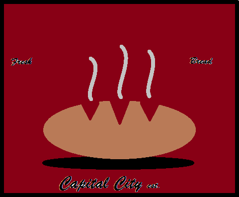

If you love fruit than this is your place to go! You can create your own combination of whatever style you want. From plain fruit to chocolate dipped strawberries and bananas. The beauty of Kebab It is that it is located on Southpier which is a great destination spot.
In the mood for a candle lit dinner? Or just a fancy sit down restaurant? Then L'ultima Cena is the place for you. Translated to the meaning of The Last Supper, you can find some amazing dishes at this restaurtant, such as pesce, spaghetti alle vongole, or pizza pugliese. Always served with a pane on the side and a fine bottle of Vino. After all this deliciousness, if you are still hungry you can follow up with dessert. L'ultima Cena offers amazing options such as Tiramisu, Souffle, and Semifreddo.
Ever just craving some good greasy food? Well The Shed is the place for you. From huge cheeseburgers to yummy steaks, you won't run out of options here. Their amazing sides include french fries, potato chips, onion rings and more. But if you are just in the mood for something light then go try a range of salad option, like the cobb or fajita salad. Last but not least desserts. Donuts, key lime pie and German chocolate pie there is never enough options at The Shed.